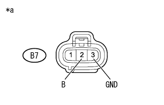
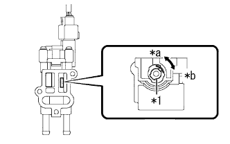

DTC P0505/33 ISCV系統 |
DTC P0511/33 ISCV系統 |
| DTC No. SAE/TCCS | DTC検出条件
| 点検部位 |
|---|---|---|
| P0505/33 |
|
|
| P0511/33 |
|
|
| 手順1 | TaSCANアクティブテスト実施アクティブテスト実施（ISCデューティー比） |
ダイアグコード記憶消去（要領は参照）
SST(TaSCAN)の画面表示に従い、[アクティブテスト]-[ISCデューティー比]を選択し、実行する。
| 結果 | 飛び先 |
|---|---|
| 異常 | A |
| 正常 | B |
|
| ||||
| A | |
| 手順2 | ワイヤハーネスまたはコネクター点検（電源回路） |
|  |
スロットルボデーアイドルスピードコントロールバルブASSYのコネクターB7を切り離す。
IG ONにする。
SST(トヨタエレクトリカルテスター)を使用して、端子間の電圧を測定する。
| 点検端子 | 点検条件 | 基準値 |
|---|---|---|
| B7-2 (B) - B7-3 (GND) | IG ON | 11 to 14 V |
| *a | 車両ワイヤハーネスコネクター前側 (スロットルボデーアイドルスピードコントロールバルブASSY接続コネクター) |
|
| ||||
| OK | |
| 手順3 | ワイヤハーネスまたはコネクター点検（エンジンコントロールコンピュータ - スロットルボデーアイドルスピードコントロールバルブASSY） |
参照。エンジンコントロールコンピュータのコネクターB36を切り離す。
スロットルボデーアイドルスピードコントロールバルブASSYのコネクターB7を切り離す。
SST(トヨタエレクトリカルテスター)を使用して、端子間の抵抗を測定する。(端子配列は参照)
| 点検端子 | 点検条件 | 基準値 |
|---|---|---|
| B36-5 (RSD) - B7-1 (RSD) | 常時 | 1 Ω未満 |
| 点検端子 | 点検条件 | 基準値 |
|---|---|---|
| B36-5 (RSD)およびB7-1 (RSD) - 他の端子間およびボデーアース間 | 常時 | 10 kΩ以上 |
|
| ||||
| OK | |
| 手順4 | スロットルボデー アイドルスピードコントロール バルブASSY点検 |
スロットルボデーアイドルスピードコントロールバルブASSYを取りはずす。
|  |
作動点検(イニシャルチェック)
スロットルボデーアイドルスピードコントロールバルブASSYのコネクターを接続する。
IG ONにして、バルブの作動を確認する。
| *1 | バルブ |
| *a | 開 |
| *b | 閉 |
|
| ||||
| OK | ||
| ||